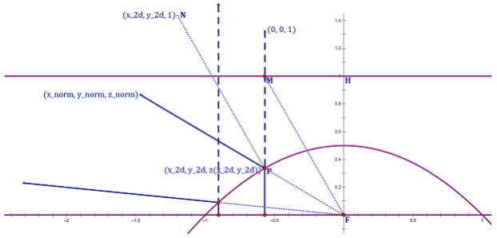

Let the equation of the (elliptic) paraboloid be z=21−21(x2+y2).
Evidently, the plane section of this paraboloid is the parabola of which the
focus is the origin, the vertex is (0,0,21) and the directrix is z=1.
Proof:
For example, let y=0, we have the intersection of the paraboloid
and ZOX plane z=21−21x2 which can be obtained by translating parabola z=−21x2 by 21 units in the
positive Z direction.
And the parabola z=−21x2 can be written as x2=−2z. Compared to the standard
equation x2=−2pz,
we have semi-latus rectump=1. This means that z=−21x2 is the parabola of which the focus is the (0,0,−2p)=(0,0,−21), the vertex is the origin and the
directrix is z=2p=21.
And we translate parabola z=−21x2 by 21 units in the
positive Z direction to obtain z=21−21x2 of which the focus is the origin (0,0,−2p+21)=(0,0,0), the vertex is (0,0,0+21)=(0,0,21) and the directrix is z=21+21=1.
Let (x_norm,y_norm,z_norm) be one of the directions in the domain of the spherical function. The goal of the paraboloid mapping is to
transform this direction to the 2D texture coordinate (x_2d,y_2d).
Proof:

Let the ray from focus F with direction (x_norm,y_norm,z_norm) intersect the paraboloid at point P. Evidently, the unit vector in the direction of FP is (x_norm,y_norm,z_norm).
Let PM be the perpendicular distance from P to directrix z=1. Evidently, the unit vector in the the
direction of PM is (0,0,1). And we have FM=FH+HM=(0,0,1)+(x_2d,y_2d,0)=(x_2d,y_2d,1).
Let PN be the angle bisector of FP and PM. And we have the direction of PN is that (x_norm,y_norm,z_norm)+(0,0,1)=(x_norm,y_norm,z_norm+1).
By the definition of the parabola, we have ∣PM∣=∣PF∣ and thus △PMF is the
isosceles triangle. This means that ∠NPM=∠FMP. Hence, we have PN∥FM. This means that PN=λFM⇒(x_norm,y_norm,z_norm+1)=λ(x_2d,y_2d,1)⇒(x_2d,y_2d)=z_norm+11(x_norm,y_norm).
// z < 0
Texel Solid Angle
By "10.4.4 Other Projections" of Real-Time Rendering Fourth Edition, the texel of the dual
paraboloid map is more uniform than the cube map. By "20.4.1 Mapping and Distortion" of [Colbert
2007], the solid angle subtended by the texel of the dual paraboloid map is dω=π(∣z∣+1)2.
% here is the MATLAB code which verifies the meaning of "d_omega = (abs(z) + 1)*(abs(z) + 1)".% "13.6.2 Sampling a Unit Disk" of [PBR Book](https://pbr-book.org/).
xi_1_size = 4096.0;
xi_2_size = 4096.0;
[ xi_1, xi_2 ] = meshgrid(linspace(0.0, 1.0, xi_1_size), linspace(0.0, 1.0, xi_2_size));
r = sqrt(xi_1);
theta = 2.0 .* pi .* xi_2;
u = r .* cos(theta);
v = r .* sin(theta);
% paraboloid
x = u;
y = v;
z = 0.5 - 0.5 .* (x .* x + y .* y);
% spherelength = sqrt(x .* x + y .* y + z .* z);
x = x ./ length;
y = y ./ length;
z = z ./ length;
% "20.4.1 Mapping and Distortion" of [GPU Gems 3](https://developer.nvidia.com/gpugems/gpugems3).
d_omega = pi .* (z + 1.0) .* (z + 1.0);
% "numerical_omega" and "groundtruth_omega" are expected to be the same.
sum_numerator = sum(sum(d_omega));
sum_denominator = xi_1_size .* xi_2_size;
numerical_omega = sum_numerator ./ sum_denominator;
groundtruth_omega = 2.0 .* pi;
% output: "numerical:6.283569 groundtruth:6.283185".
printf("numerical:%f groundtruth:%f\n", numerical_omega, groundtruth_omega);
% here is the MATLAB code which verifies the meaning of "fWt = 4/(sqrt(fTmp)*fTmp)".% "13.3.2 The Rejection Method" of [PBR Book](https://pbr-book.org/)
u_size = 4096.0;
v_size = 4096.0;
[ u, v ] = meshgrid(linspace(-1.0, 1.0, u_size), linspace(-1.0, 1.0, v_size));
r_2 = u .* u + v.* v;
chi = cast (r_2 < 1.0, class (r_2));
% paraboloid
x = u;
y = v;
z = 0.5 - 0.5 .* (x .* x + y .* y);
% spherelength = sqrt(x .* x + y .* y + z .* z);
x = x ./ length;
y = y ./ length;
z = z ./ length;
% "20.4.1 Mapping and Distortion" of [GPU Gems 3](https://developer.nvidia.com/gpugems/gpugems3)
d_omega = pi * (z + 1.0) .* (z + 1.0);
% "numerical_omega" and "groundtruth_omega" are expected to be the same.
sum_numerator = sum(sum(chi .* d_omega));
sum_denominator = sum(sum(chi .* 1.0));
numerical_omega = sum_numerator ./ sum_denominator;
groundtruth_omega = 2.0 .* pi;
% output: "numerical:6.283235 groundtruth:6.283185".
printf("numerical:%f groundtruth:%f\n", numerical_omega, groundtruth_omega);